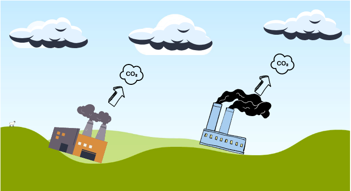

poluicao atmosférica
A poluição atmosférica acontece quando a emissão de substâncias na atmosfera muda a composição do ar, provocando desequilíbrios ambientais e causando prejuízos à saúde dos seres vivos. Também chamada de poluição do ar, esse tipo de poluição é um dos que mais causam prejuízos ao seres humanos e aos ecossistemas.